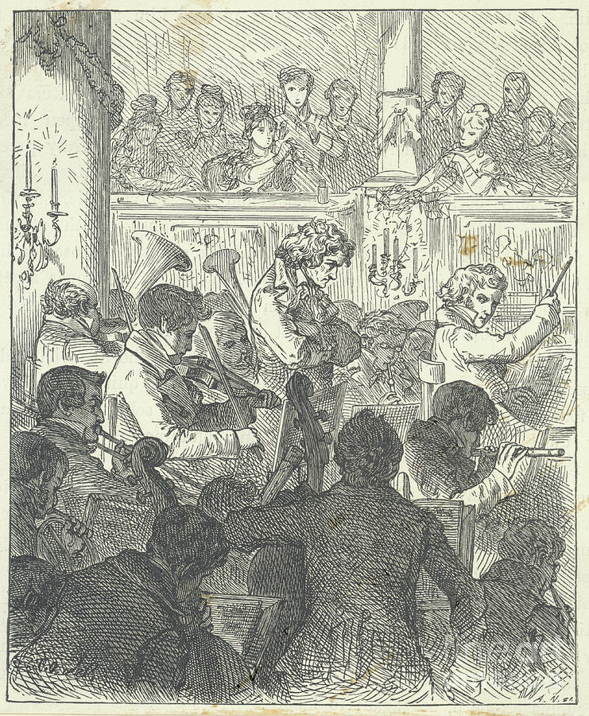

Beethoven estrena una sinfonía que canta y Viena se pone de pie
El maestro presentó esta noche su Novena sinfonía, la primera que suma un coro a la orquesta para entonar la oda A la alegría de Schiller. Sordo por completo, marcó los tiempos junto al director Umlauf de una música que ya no puede oír. El público lo aclamó con cinco salvas de aplausos.

El teatro de la Puerta de Carintia vivió esta noche una función que sus muros no olvidarán. Luis van Beethoven, el compositor más ilustre de nuestra ciudad, presentó su Novena sinfonía, una obra inmensa que corona su catálogo tras doce años sin dar una sinfonía nueva. La sala, colmada hasta los pasillos, escuchó primero una obertura y piezas de su Misa solemne; pero todos habían venido por la sinfonía, de la que se murmuraba una novedad inaudita: en el último movimiento, cuando la orquesta parece haberlo dicho todo, se levantan un coro y cuatro voces solistas y la música se pone a cantar.
Los versos son de Schiller, la oda A la alegría, que llama hermanos a todos los hombres bajo un padre común. La dirección estuvo a cargo del maestro Umlauf, pero Beethoven quiso estar en el escenario, de pie junto a él, con la partitura delante, marcando los tiempos con todo el cuerpo. Los músicos tenían orden de seguir únicamente la batuta de Umlauf, porque el maestro, y esto ya no es secreto para nadie en Viena, está completamente sordo. Dirigía, si puede decirse así, una música que sonaba entera dentro de su cabeza y en ninguna otra parte para él.
Viena, hay que confesarlo, andaba últimamente entregada a las dulzuras italianas del señor Rossini, y no faltó quien dudara de que el público acompañara una obra tan vasta y tan severa. Los amigos del maestro debieron rogarle además que estrenara aquí y no en Berlín, como él amenazaba, dolido con su propia ciudad. La sinfonía es larga, exigente, de una audacia que desconcierta a los doctos; los ensayos fueron pocos y los cantantes pidieron clemencia ante pasajes que juzgaban imposibles. Nada de eso importó esta noche: la sala entendió que asistía a algo más grande que un concierto.
El momento que Viena contará a sus hijos no estuvo en la partitura. Al caer el último acorde, el teatro estalló; pero Beethoven, de espaldas al público, seguía inclinado sobre sus papeles, ajeno a la tempestad que había desatado. Cuentan que la contralto Caroline Unger lo tomó suavemente del brazo y lo hizo volverse, para que viera con los ojos la ovación que sus oídos le negaban: pañuelos agitados, sombreros al aire, manos en alto. Hubo cinco salvas de aplausos, y se dice que la policía debió pedir moderación, pues tres son las que corresponden a la entrada del emperador.
Quien esto escribe no sabe de contrapunto lo bastante para juzgar la factura de la obra, y deja la disputa a los entendidos, que ya discuten. Sabe, en cambio, lo que vio: una sala entera de pie ante un hombre que no podía oírla, agradeciéndole una alegría que él fabricó desde el silencio. Hay en esa melodía final, sencilla como una canción de aldea, algo que se prende al alma, y los concurrentes salieron tarareándola por las calles. Nos atrevemos a pensar que esa música va a cantarse por mucho tiempo, dondequiera que los hombres quieran llamarse hermanos.